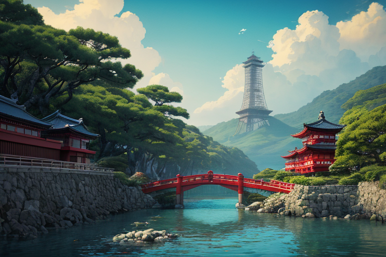
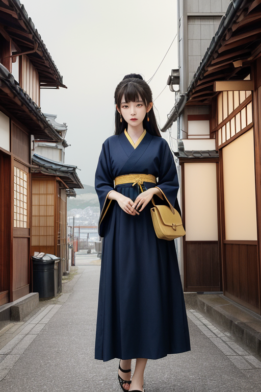
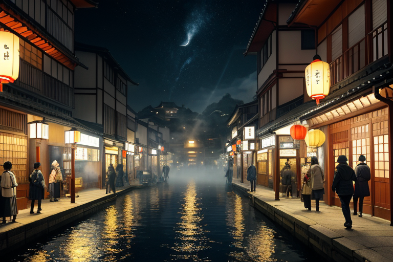
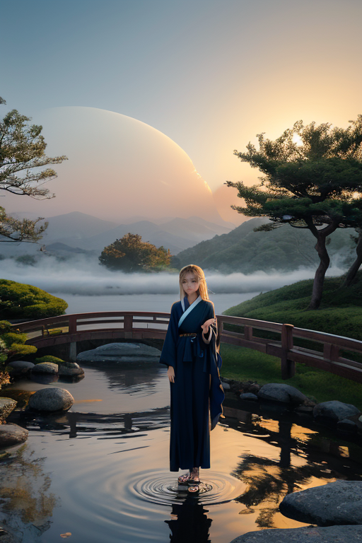

第一章 現実の神奈川
あなたはまだ気づいていない。この土地にも、王がいることを。
横浜・山下公園の波止場。遠くに大桟橋の白い屋根が見える。ここから、黒船が来た。安政元年六月、浦賀沖に現れた四隻の煙は、この国の時間を切り裂いた。今は観光船がゆっくりと出入りし、カモメが舞う。人々はその歴史の重さを、日常の風景として呼吸している。
地図の上では、この県は歪みの糸に縫い付けられている。相模トラフ、そして首都直下。プレートが潜り込み、蓄積する力を、土地は静かに抱え込む。湘南の海は青く、江ノ島の灯台が穏やかに光る日々の裏側で、地殻はゆっくりとねじれている。
港には船が寄り、異国の言葉が混ざり、新しい匂いが積み荷と共に降ろされる。中華街の賑わい、異人館の残影、工場地帯の喧騒。すべてが入り混じり、沈殿し、時に衝突する。この混交そのものが、神奈川という土地の地質のようなものだ。
そして誰も知らない。この入り混じるすべての「間」を、ひとりの王が微かに調整していることを。

第二章 歪みの兆候
横浜中華街の喧噪は、異なる時間が混ざり合う音だった。広東語、北京語、日本語。それらが交差する隙間から、微かな軋みが聞こえる。カナガリア・ノクスは、関帝廟の前で立ち止まった。手に持った崎陽軒のシウマイの包み紙が、かすかに震えている。
「王、地脈の乱れです」
ノクシアが肩に止まり、囁いた。
「開港の時の『衝撃』が、現代の地層にまで響いています。混ざりが生んだ歪みが、地殻の歪みと共鳴を始めている」
1853年、ペリーの黒船がもたらしたのは、開国だけではなかった。異なる文明のプレートが、この土地に突如として接合した。その衝撃は、地質記録に深く刻まれ、時折、忘れた頃に疼く。
王は目を閉じた。感覚を拡げる。湘南の海から吹く風、箱根の山々の気配、港に停泊する船の重み。それらすべての「間」を流れる、目に見えない文化の断層。混ざることは、新たなものを生む。しかし、その接合面には、常に小さな亀裂が走る。
彼はそっと息を吐いた。震える包み紙の震えが、ほんの少しだけ静まった。消せない。ただ、ほんの一瞬、遅らせるだけだ。
混ざることで得るものは、常に、見えない歪みを内包している。

第三章 王の葛藤
横浜中華街の喧噪は、異なる言葉と香料が渦巻く、混交そのものの祝祭だった。カナガリア・ノクスはその路地の一角に立ち、目を閉じる。1853年、ペリーの黒船がもたらした「開港」という巨大な波。それは避けられない歴史のうねりだった。王の役目は、その衝突を緩和し、新たな流れを調整すること。しかし今、彼の内側で、一つの問いが渦を巻く。この変革を、ここで止めるべきか。
止められない。彼は知っていた。歴史の大きな流れは、王といえど微調整の域を出ない。だが、微調整の方向を、彼は選べる。衝突を最小限に抑え、静かな融合へ導くか。あるいは、敢えて激しい摩擦を許容し、その火花から生まれる強靭な何かを、この地に刻み込むか。
「混ざることで得るものは…」
彼の傍らで、ノクシアが呟いた。
「痛みを伴いますね」
王は群青色の瞳を開いた。港に浮かぶ船の灯りが、闇に金色の道を引いていた。得るもの。それは、安寧ではない。時に、痛みと喪失を内包した、新たな形そのものだ。彼は決断した。止めはしない。しかし、この混交のすべての瞬間に、彼は寄り添い、その歪みを、ほんの少しだけ和らげよう。

第四章 妖精との対話
三渓園の池に、一羽の鷺が降り立った。その羽ばたきが水面を揺らし、古い日本庭園に映る横浜の近代建築の影を、一瞬、かき乱した。
「混ざることは、時に、古い形の死を意味します」
ミナトラが、池の畔に立つ王に語りかけた。彼女の声は、港に出入りする船の汽笛のように、どこか寂寥を帯びていた。
「開港は、鎖国の終わり。確かに新しい風と富をもたらしました。しかし、同時に、この地に脈々と流れてきた無数の小さな流儀、慣習が、波に洗われる小石のように、形を変え、あるいは消えていきました。それが変革の代償です」
ノクシアが、そっと付け加える。
「でも、王よ。混ざり、変容するからこそ、生まれる強さがあります。異なるものが衝突し、時に傷つき合い、それでもなお、新たな『共』を見出そうとする営み。その過程そのものが、この土地の、揺るぎない靭性となるのです。私たちは、その衝突が破壊に至らないよう、ほんの少し、波を和らげるだけです」
王は、池に広がる波紋を見つめた。一つの波紋が別の波紋と重なり、複雑な模様を描いて消えていく。得るもの。それは、決して無傷ではいられない、しかし、それ故に誰にも奪えぬ、交わりの記憶そのものだった。
第五章 微調整と余韻
一八五三年、浦賀沖に黒船が現れた。異国の圧力が、この国の鎖を解こうとしていた。王は、横浜の丘の上に立っていた。開国か、戦争か。歴史は巨大な歪みを孕み、激流となって流れようとしている。彼は感情を持たぬ存在として、ただ調整を行うべきだった。しかし、湘南の海風が運ぶ人々の不安と期待、好奇心と恐怖が混ざり合う感情の密度が、彼の内側に微かな軋みを生じさせた。
混ざることは、時に痛みを伴う。しかし、混ざらなければ、この先もずっと、歪みは増幅し続けるだろう。彼は、歴史の流れを一度だけ、ほんの少し曲げることを決めた。黒船の大砲が暴発する偶然を、港の霧が視界を遮る一瞬の偶然を、調整した。衝突は回避され、交渉の時間が生まれた。代償は大きかった。この介入により、王国の力の多くが消費され、彼自身の存在が稀薄になりかけた。
得るもの。それは、破滅ではなく、困難な対話の可能性。混ざり合う過程そのものの継続だった。王の姿は霞のように薄れ、港町には新たな風が吹き始める。彼は、中華街の賑わいや、工場の汽笛、異なる言葉が交錯する埠頭を、微かに感じながら、静かに調整を続ける。
あなたの町にも、王がいる。